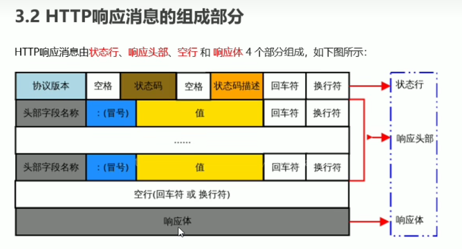

<!DOCTYPE html>
<html lang="en">
<head>
    <meta charset="UTF-8">
    <meta http-equiv="X-UA-Compatible" content="IE=edge">
    <meta name="viewport" content="width=device-width, initial-scale=1.0">
    <title>Document</title>
</head>
<body>
    <script>

// 通信，就是信息的传递和交换。

// 通信三要素:
// 通信的主体 : lisa  rose  客户端 服务器
// 通信的内容 : 考上了  考上了
// 通信的方式 : 写信    响应

// 【lisa】要把 【考上了】这个消息 通过【写信】 传给【 rose】
// 【服务器】要把 【考上了】这个消息 通过【响应】方式 传给【客户端浏览器】
 

// 通信协议：
// 通信协议(Communication Protocol）是指通信的双方完成通信所必须遵守的规则和约定。
// 通俗的理解:通信双方采用约定好的格式来发送和接收消息，这种事先约定好的通信格式，就叫做通信协议。
// 客户端与服务器之间要实现网页内容的传输，则通信的双方必须遵守网页内容的传输协议。
// 网页内容又叫做【超文本】，因此网页内容的传输协议又叫做超文本传输协议(HyperText Transfer Protocol)简称HTTP协议。
 
// 客户端 要以HTTP协议要求的格式把数据 提交 到服务器
// 服务器 要以HTTP协议要求的格式把内容 响应 给客户端

//---------------------------------------------
// 2.1什么是HTTP请求消息
// 由于HTTP协议属于客户端浏览器和服务器之间的通信协议。
// 因此，客户端发起的请求叫做HTTP请求，客户端发送到服务器的消息，叫做 HTTP请求消息。
// 注意:HTTP请求消息   又叫做HTTP请求报文。

// 请求行：请求方式啥的
// 请求头
// 空格
// 请求体：只有post 传给服务器的数据

//---------------------------------------------
// 3.2 HTTP响应消息的组成部分
// HTTP响应消息由
状态行、
响应头部 键值对
空行 
响应体Response：响应体中存放的，是服务器响应给客户端的资源内容。
4个部分组成，如下图所示:
// 
//-----------------------------------------------
// 4.1什么是HTTP请求方法
// HTTP请求方法，属于HTTP 协议中的一部分，
// 请求方法的作用是:用来表明要对服务器上的资源执行的操作。
// 最常用的请求方法是 GET和POST。
 

//  前四个增删改查比较重要
// GET
// (查询)发送请求来获得服务器上的资源，请求体中不会包含请求数据，请求数据放在协议头中。

// POST
// (新增)向服务器提交资源（例如提交表单或上传文件)。数据被包含在请求体中提交给服务器。

// PUT
// (修改)向服务器提交资源，并使用提交的新资源，替换掉服务器对应的旧资源。

// DELETE
// (除)请求服务器删除指定的资源。

// HEAD
// HEAD方法请求一个与GET请求的响应相同的响应，但没有响应体。

// OPTIONS
// 获取http服务器支持的http请求方法，允许客户端查看服务器的性能，比如ajax跨域时的预检等。

// CONNECT
// 建立一个到由目标资源标识的服务器的隧道。

// TRACE
// 沿着到目标资源的路径执行一个消息环回测试，主要用于测试或诊断。

// PATCH
// 是对PUT方法的补充，用来对已知资源进行局部更新。

//----------------------------------------------------------------

// 5.1什么是HTTP响应状态码
// HTTP响应状态码(HTTP Status Code)，也属于HTTP协议的一部分，
// 用来标识响应的状态。
// 响应状态码会随着响应消息一起被发送至客户端浏览器，
// 浏览器根据服务器返回的响应状态码，就能知道这次HTTP请求的结果是成功还是失败了。

// Response Headers
//     HTTP/1.1 200 ok   200是状态码 ok是对他的描述

// HTTP状态码由三个十进制数字组成，第一个十进制数字定义了状态码的类型，后两个数字用来对状态码进行细分。
// HTTP状态码共分为5种类型:
// 分类                        分类描述
// 1**               信息，服务器收到请求，需要请求者继续执行操作(实际开发中很少遇到1**类型的状态码)
// 2**               成功，操作被成功接收并处理
// 3**               重定向，需要进一步的操作以完成请求
// 4**               客户端错误，请求包含语法错误或无法完成请求
// 5**               服务器错误，服务器在处理请求的过程中发生了错误
//-----------
// 200  OK   请求成功。一般用于GET 与POST请求
 
// 201  Created  已创建。成功请求并创建了新的资源，通常用于POST 或PUT请求
// -------------
// 3*范围的状态码，表示表示服务器要求客户端重定向，需要客户端进一步的操作以完成资源的请求。常见的3枯*类型的状态码如下:
 
// 301  Moved Permanently  【永久移动】。请求的资源已被永久的移动到新URI，返回信息会包括新的URI, 浏览器会自动定向到新URI。今后任何新的请求都应使用新的URI代替
// 302  Found  【临时移动】。与301类似。但资源只是临时被移动。客户端应继续使用原有URI
// 304  Not Modified  【末修改】。所请求的资源未修改，服务器返回此状态码时，不会返回任何资源(响应消息中不包含响应体)。客户端通常会缓存访问过的资源。

//-----------
// 4**范围的状态码，表示客户端的请求有非法内容，从而导致这次请求失败。常见的4**类型的状态码如下:;
 
// 1、语义有误，当前请求无法被服务器理解。除非进行修改，否则客户端
// 400  Bad Request  不应该重复提交这个请求。2、请求参数有误。
// 401  Unauthorized  当前请求需要用户验证。
// 403  Forbidden    服务器已经理解请求，但是拒绝执行它。
// 重要404  Not Found    服务器无法根据含广端的请求找到资源(网页)
// 408  Request Timeout  请求超时。服务器等待客户端发送的请求时间过长，超时。
//------------
// 5**范围的状态码，表示服务器未能正常处理客户端的请求而出现意外错误。常见的5**类型的状态码如下:

// 500  lnternal Server Error  服务器内部错误，无法完成请求。
// 501  Not lmplemented  服务器不支持该请求方法，无法完成请求。只有GET和HEAD请求方法是 要求每个服务器必须支持的，其它请求方法在不支持的服务器上会返回501
// 503  Service Unavailable  由于超载或系统维护，服务器暂时的无法处理客户端的请求。


    </script>

</body>
</html>